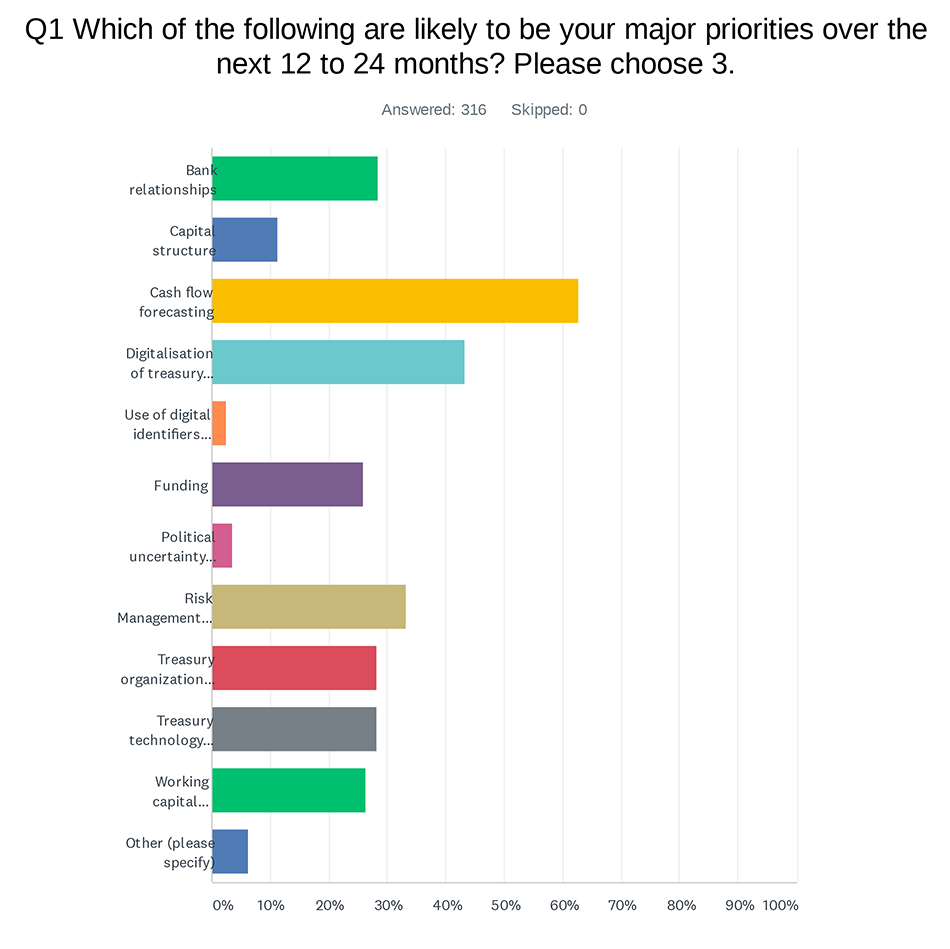

Every year, EACT launches a treasury survey to identify top priorities for Corporates. It also aims at identifying challenges corporate treasurers of MNC’s are facing and technological innovations they intend to implement. As this survey is the first one post-COVID, it was interesting to see whether those priorities have changed and if they did why. This year, EACT received 343 answers from MNC’s across Europe.
The 2021 EACT survey, as it has become a tradition, attempts early this year to determine what the treasury trends and priorities for multinational companies will be in the next 12 to 24 months. This year, not surprisingly, future cash-flow forecasting (1) is largely in the lead, followed by the digitalization of the treasury function (2), financial risks management (3), followed by a few priorities at equal levels, such as treasury organization, treasury technology, working capital requirements, financing, and banking relationship management.

We are not surprised that Cash-Flow Forecasting comes out on top when the COVID crisis has been hitting us for the past year. The uncertainties surrounding the economy explain the difficulty in producing reliable and accurate forecasts. In addition, the C-level has repeatedly called for stress scenarios and sensitivity analyses to predict the most diverse situations. The digitalization of the treasury function, itself part of the modernization of the finance function, was ranked second. Here again, it seems to us that the need to dematerialize, digitize and automate is logical to make companies more resilient and efficient in their financial management. Finally, in this top tier, the management of financial risks, including currency risk, which can be explained by the increased volatility of the markets. As can be seen, despite the health crisis, the priorities have remained relatively identical, even if the ranking order is somewhat different. However, amazingly, the funding issue is not included in the top 6 priorities. After the COVID crisis, many businesses were under pressure and face liquidity problems. We could have expected this issue higher ranked.
In terms of technological innovations, it appears that in the next 12 months, the priority will be placed on data analytics, the use of robotics (RPA), API’s and finally Artificial Intelligence (AI). Here again, no real significant changes in the top 4 technologies, which are the same and identically ranked compared to 2020’s survey. We all understand that the C-level wants treasury to lake use of huge financial data they sit on and develop more reporting and dashboards. Robotics and RPA’s are an intermediary steps to automation, which explains its high ranking. API’s have shown the use banks and corporates can make out of them. Contrary to the recent excitement for Bitcoins, crypto currencies do not seem to be a priority for treasurers. This is not surprising given their nature and the fact that they are a new asset class rather than a new currency. The answers show a certain lucidity on the part of treasurers who seem realistic in their use of new technologies.
On the question of which technology will be of most interest in the next 12 to 24 months, access to real-time information emerges, followed by real-time liquidity, explained by the current crisis, and need for immediate funding, sometime to simply survive. The third one is the real-time collection and payment (we can see that immediacy and the time factor have become crucial, at least for certain industries and B2C’s) and finally immediate (automated) management of foreign exchange risk. The FX risk, given high volatility of markets and uncertainties, is back in top priorities. The fact that there still are lots of highly manual processes around FX management is pushing for further automation for efficiency and internal controls reasons, mainly. Next comes the use of very promising API’s (i.e., Application Programming Interfaces) and "on-demand processing". The concept of on-demand treasury and real-time access to information has become a "must". Treasurers realize that they are sitting on a huge quantity of financial data that needs to be used, crunched, consolidated, and analyzed to enable better management decision and to be more proactive and faster in reacting to crises or to problems.
What role does treasury play in the management of working capital, what is its influence or responsibility within the organization is an essential question to enable it to be optimized. It emerges that the “treasurer influences” (at 50%+) first and foremost, is “responsible” for 20% of the treasurers, and partially responsible (i.e., 20%-) or not at all for the others. Working capital enhancement projects are always complex because it includes a lot of different departments. To be successful and it is clear that it is a major priority post-COVID, it requires a solid sponsorship from the CFO’s, clearly identified Project Managers and commitment from all stakeholders.
The question of the greatest challenge facing the treasurer is interesting to understand what he or she will need in priority. It emerges that the lack of standardization in processes and controls is the main challenge, followed by the multitude of technological platforms. Then come the multiple banking relationships, the too large number of bank accounts, the lack of sufficient resources (a recurring problem - but one that drives automation), the lack of support from subsidiaries, the lack of budget (classic in times of crisis). Certainly, standardization is a preliminary to automation, improving the organization of the department, increasing efficiency (e.g., automatic reconciliation, Straight Through Processing / STP, use of mass data, etc.). The specificity of platforms and services, fintech's and API's explains the multitude of solutions, corollary of specialization. They may be multiple on the service offer, but they are also numerous to serve each time a specific need. The treasurer then must juggle with more and more solutions, which complicates management.
The final question covers the ESG (i.e., Environment, Social & Governance) and how the treasurer supports and assists colleagues in implementing measures to support social and environmental responsibility. The forced reduction of travel and telecommuting during COVID certainly helped the treasurer to contribute to this. The issuance of green bonds comes in second place. Next is the review of processes and controls to improve sustainability. Despite this, a quarter of the treasurers are not involved in the ESG agenda. The use of sustainable investment instruments comes next with the objective of contributing to ESG using “greener” and more socially responsible money market funds. It seems that the ESG theme is gaining in importance but has not yet reached its full development and maturity. The treasurer seems to underestimate the possible imprint he may have on this theme.
In summary, the results seem to be reinforced by the arrival of the pandemic, which has reinforced the need for centralization and automation, the two best responses to such a crisis. This quest for further digitization and the hope founded in new technologies and innovations are explained by the importance of combating increasing risk of fraud and strengthening of internal controls, by growing economic uncertainties, by the need for more efficiency and by a lack of sufficient (human) resources. The crisis has crystallized the need to digitize and accelerate the ongoing transformation. The maturity of technological solutions makes it possible more than ever to place greater hope in improved cash management.
François Masquelier, Vice-Chairman of EACT (European Association of Corporate Treasurers)
Join us at the ACT Annual Conference at ACC Liverpool, UK, on 21-22 May 2024. A limited number of free places are available for EACT members.
View MoreThe European Associations of Corporate Treasurers (EACT) is pleased to invite its members to submit nominations for the 5th EACT Award in 2024.
View More
We are delighted to reveal the results of the 2023 EACT survey. Discover the top priorities of 250 group treasurers from European multinationals.
View MoreThe European Association of Corporate Treasurers (EACT) is delighted to welcome a new representative for the Association of German Treasurers (VDT).
View MoreWe are delighted to reveal Merck Group as the winner of the 2023 EACT Award, nominated by VDT.
View More